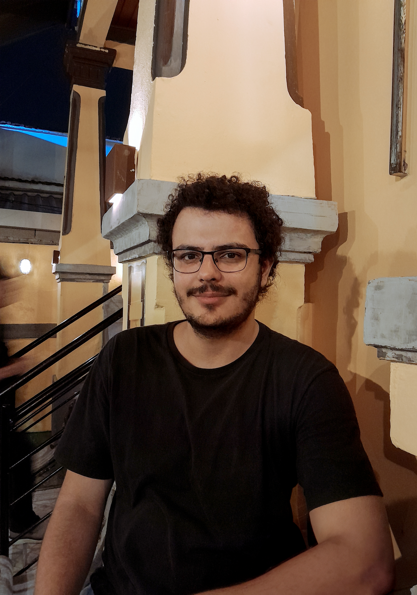

IESP-UERJ · Political Science
PhD student in Political Science, researching local politics, interest intermediation, distributive politics, and subnational power dynamics in Brazil.

Profile
I am a PhD student in Political Science at the Instituto de Estudos Sociais e Políticos da Universidade do Estado do Rio de Janeiro — IESP-UERJ. I hold a Master's degree in Social Sciences from the Universidade Federal de Juiz de Fora — UFJF, within the research line Culture, Democracy, and Institutions.
My research interests include local politics, distributive politics, associativism, clientelism, political brokers, and political theory. I currently study the strategies used by local executives to obtain resources and the dynamics of interest intermediation in Brazilian local politics.
I am a researcher at the Núcleo de Pesquisa em Política Local (NEPOL-UFJF) and Labortaório de Monitoramento e Avaliação de Políticas Públicas (MAPE-IESP), and have worked on projects related to representation, political brokers, public policy evaluation, local power, and subnational politics in Brazil and Latin America.
Academic Background
Instituto de Estudos Sociais e Políticos — IESP-UERJ · Rio de Janeiro, Brazil
Research: Local executives strategies for obtaining resources and political brokers in local politics.
In progressUniversidade Federal de Juiz de Fora — UFJF · Juiz de Fora, Brazil
Research line: Culture, Democracy, and Institutions.
Thesis: Local Voices, Political Connections: The Role of Neighborhood Association Presidents as Political Brokers — 2025.
CompletedUniversidade Federal de Juiz de Fora — UFJF · Juiz de Fora, Brazil
CompletedUniversidade Federal de Juiz de Fora — UFJF · Juiz de Fora, Brazil
CompletedInterests & Themes
Analysis of the role of political intermediaries — such as neighborhood association presidents — in representation dynamics and resource distribution within Brazilian municipalities.
Investigation of the strategies adopted by mayors to secure parliamentary amendments, focusing on the relationships between local executives and the federal legislature.
Systematic mapping of studies on local power published in leading Political Science and International Relations journals over the last three decades.
Study of forms of collective organization at the local level and their relationship with clientelistic practices, especially in small and medium-sized cities.
Research & Extension
Comparative subnational research on far-right actors in Brazil and Argentina, focusing on institutional politics, agendas, networks, strategies, and governing practices.
Role: Coordinator.
Research laboratory focused on producing scientific evidence for debates on democracy, public policies, elections, and the effects of government action on people's lives.
Role: Research member.
Project on political brokers and multilevel relations among Brazilian political actors, with attention to interest intermediation in local politics.
Role: Research member.
Analysis of studies on local power in Brazil, focusing on articles published in leading journals in Political Science and International Relations over the last three decades.
Role: Research member.
Multimethod research on local power, distributive politics, clientelism, and the role of brokers connecting politicians, social leaders, organizations, and voters at the local level.
Role: Research member.
Extension and research initiative linked to MAPE/IESP-UERJ, focused on systematic reviews and meta-reviews about public policies in Brazil and abroad.
Role: Coordinator.
Junior enterprise in Social Sciences at Universidade Federal de Juiz de Fora — UFJF.
Role: Member.
Teaching Experience
Short course taught / Other technical production
Course focused on introductory tools and practices for using R in data analysis.
Short course taughtShort course / Introductory training
Introductory mini-course on R, with emphasis on basic workflows for social science research.
Mini-course taughtAdditional Training
Universidade do Estado do Rio de Janeiro — UERJ, Brazil
Workload: 3 hours.
CompletedUniversidade do Estado do Rio de Janeiro — UERJ, Brazil
Workload: 3 hours.
CompletedUniversidade do Estado do Rio de Janeiro — UERJ, Brazil
Workload: 2 hours.
CompletedUniversidade do Estado do Rio de Janeiro — UERJ, Brazil
Workload: 2 hours.
CompletedUniversidade do Estado do Rio de Janeiro — UERJ, Brazil
Workload: 2 hours.
CompletedUniversidade do Estado do Rio de Janeiro — UERJ, Brazil
Workload: 2 hours.
CompletedUniversidade do Estado do Rio de Janeiro — UERJ, Brazil
Workload: 2 hours.
CompletedUniversidade Federal de Juiz de Fora — UFJF, Brazil
Workload: 4 hours.
CompletedCurso-R, Brazil
Workload: 18 hours.
CompletedCurso-R, Brazil
Workload: 18 hours.
CompletedUniversidade Federal de Juiz de Fora — UFJF, Brazil
Workload: 6 hours.
CompletedUniversidade Federal de Juiz de Fora — UFJF, Brazil
Workload: 15 hours.
CompletedUniversidade Federal do Rio Grande do Sul — UFRGS, Brazil
Workload: 12 hours.
CompletedUniversidade Federal de Juiz de Fora — UFJF, Brazil
Workload: 15 hours.
CompletedUniversidade Federal de Juiz de Fora — UFJF, Brazil
Workload: 8 hours.
CompletedAcademic Work
Journal Article · 2026
Journal of Politics in Latin America, v. 18, p. 261445940, 2026.
Apresentação em Congresso · 2024
Jürgen Habermas: a mudança na resolução da esfera pública
Primeiro Seminário Nacional Crise e Metamorfoses da Sociologia · Juiz de Fora, 2024.
Capítulo de Livro · 2023
A democracia liberal em xeque: o conceito de político em Carl Schmitt e o fenômeno do populismo para Pierre Rosanvallon
In: Política em Foco: O melhor embate é o debate, Vol. 3. Editora Bagai, 2023.
Capítulo de Livro · 2022
Os pentecostais no poder: a composição da bancada evangélica no Congresso Federal
In: Política em Foco: debates e embates, Vol. 1. Editora Bagai, 2022.
Academic Events
DUQUE, G. A. 2025. Apresentação de Trabalho/Congresso.
ROCHA, M. M.; CARDOSO, G.; DUQUE, G. A. 2025. Apresentação de Trabalho/Congresso.
DUQUE, G. A. 2024. Apresentação de Trabalho/Congresso.
DUQUE, G. A. 2024. Apresentação de Trabalho/Congresso.
DUQUE, G. A.; OLIVEIRA, V. H. C. 2022.
Academic & Professional Profiles
Get in Touch
I am open to academic collaborations, seminar invitations, and exchanges on local politics, distributive politics, interest intermediation, public policy evaluation, and Brazilian political science.
I am affiliated with IESP-UERJ, NEPOL-UFJF and MAPE-IESP. Please feel free to contact me.